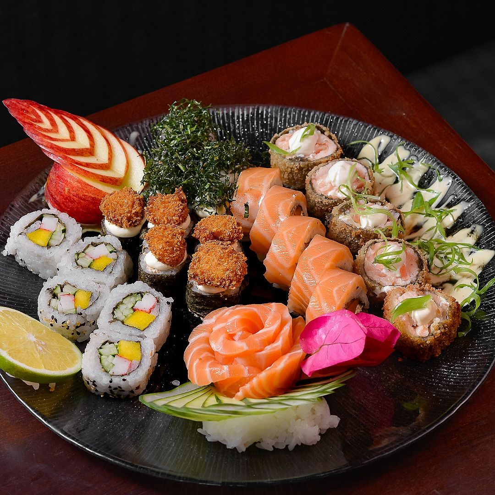
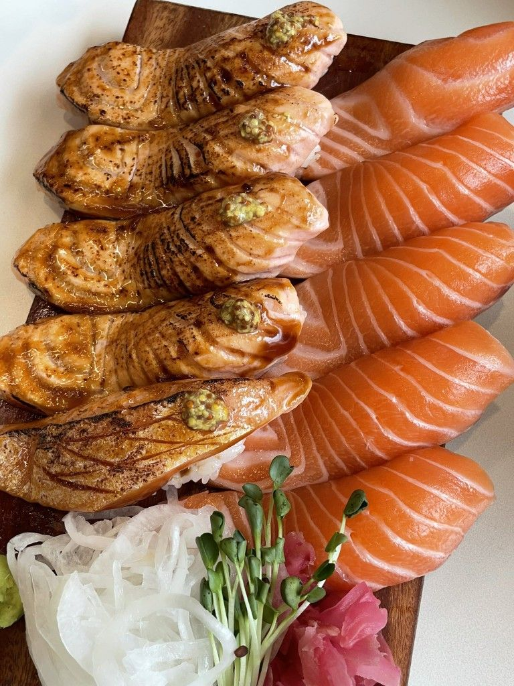
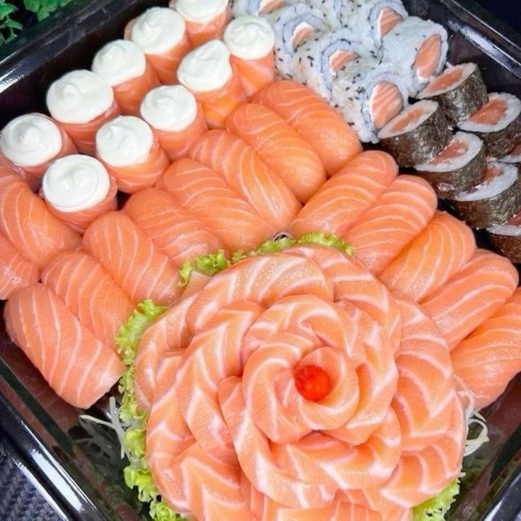
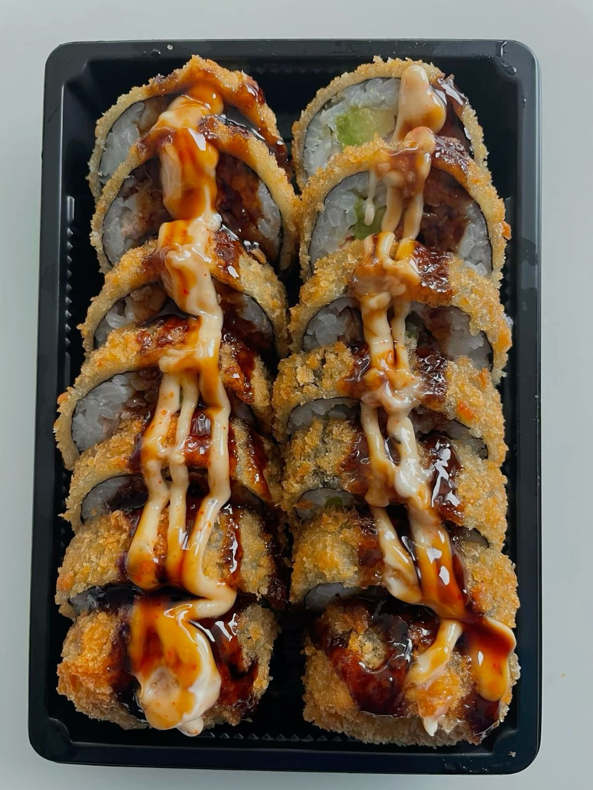
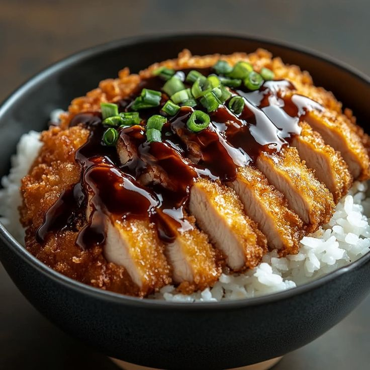

Voltar para o cardapio
Comidas Japonesas

Porção de sushi tradicional
Seleção de peças de sushi com ingredientes clássicos, como peixe cru e arroz.
Comprar

Sashimi
Fatias finas de peixe cru ou frutos do mar, servidas sem arroz, ao contrário do sushi.
Comprar

Niguiri de salmão
Pequena porção de arroz de sushi, moldado em formato oval, coberta com uma fatia fresca de salmão cru.
Comprar

Hot Roll
Rolinho de sushi empanado e frito, recheado com peixe e cream cheese. Crocante por fora, cremoso por dentro.
Comprar

Torikatsu
Frango empanado com farinha panko, frito até ficar crocante. Parente do tonkatsu.
Comprar